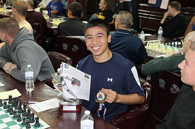

Framework for Accepting Awards

Accepting an award may be daunting at times, but it’s a crucial skill for all people to learn. You never know when you may be recognized for something and you have to give a speech on the spot! So to be prepared you must start by asking a couple questions to yourself.
Who nominated you?
Who invited you to join this group or encouraged you to get involved in this project or event?
What is your connection to this group?
How do you feel about the people and the organization’s goals?
Why are they giving you this award?
Have you seen someone else accept this same award?
When was the first time you attended a meeting and what were your experiences?
Be sincere and know how long you are expected to speak. After answering these questions quickly in your head, just speak your heart, be honest, sincere, and break a leg!